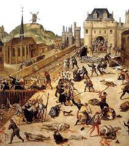
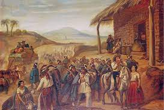
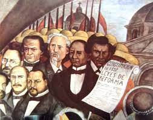
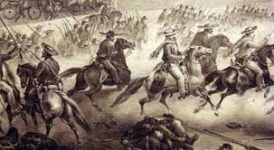
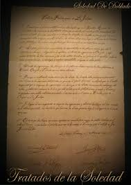
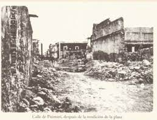
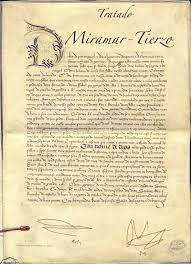
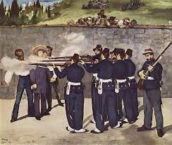

-

1857 5 de Febrero
Guerra de Reforma.
1857 1 de Diciembre
Plan de Tacubaya.
-

1858
Mexico buscaba estabilidad politica, economica y social e intentaba consolidarse plenamente como un estado soberano.
-

1859 en Julio
Leyes de Reforma de Veracruz.
-

1860
Mexico Tenia 2 gobiernos simultaneos uno conservador encabezado por Zuloaga en la capital y otro liberal dirigido por Juarez quien cambiaba constantemente la sede de su gobierno a los estados de la repubica que apoyaban la causa liberal que desencadeno una guerra de Reforma entre liberales y conservadores.
-
1861 1 de Enero
Suspencion de la deuda externa.
-

1862 19 de Febrero
Tratado de la deuda externa.
1862 5 de Mayo
Batalla de puebla
-

1863 17 Mayo
Cae puebla.
1863 10 de Junio
Los Fanceses toman la CD de Mexico
1863 Octubre
Le ofrecen el trono a Maximiliano de Habsburgo.
-

1864 10 de Abril
Tratado de Miramar.
-

1867 11 de Marzo
Se retira el ejercito Frances
1867 2 de Abril
Batalla de Puebla
1867 15 de Mayo
Se rinde Maximiliano
1867 19 de Junio
Es fusilado Maximiliano
-

1868
Donec semper quam scelerisque tortor dictum gravida. In hac habitasse platea dictumst. Nam pulvinar, odio sed rhoncus suscipit, sem diam ultrices mauris, eu consequat purus metus eu velit. Proin metus odio, aliquam eget molestie nec, gravida ut sapien. Phasellus quis est sed turpis sollicitudin venenatis sed eu odio. Praesent eget neque eu eros interdum malesuada non vel leo. Sed fringilla porta ligula.